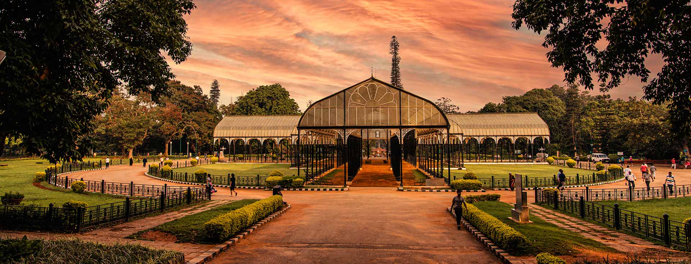
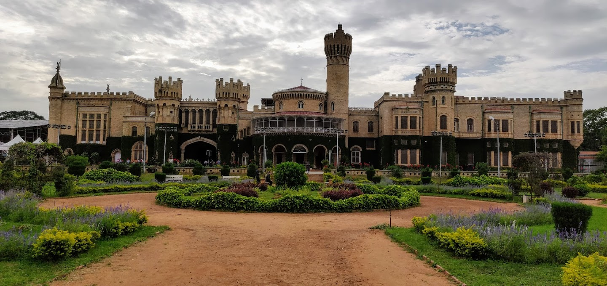
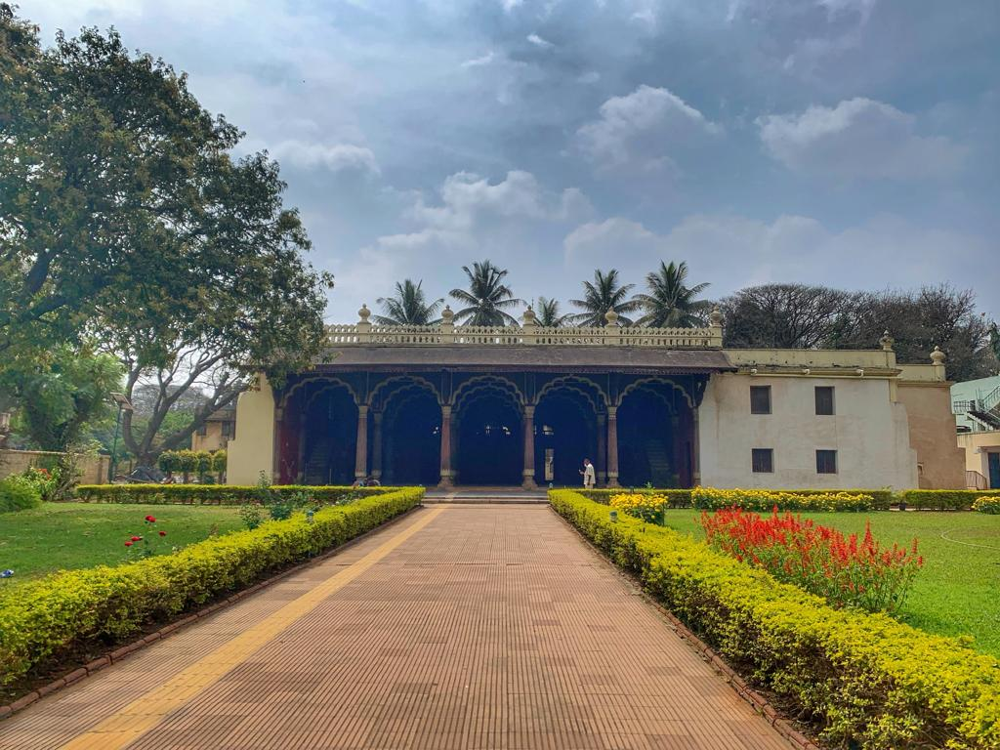
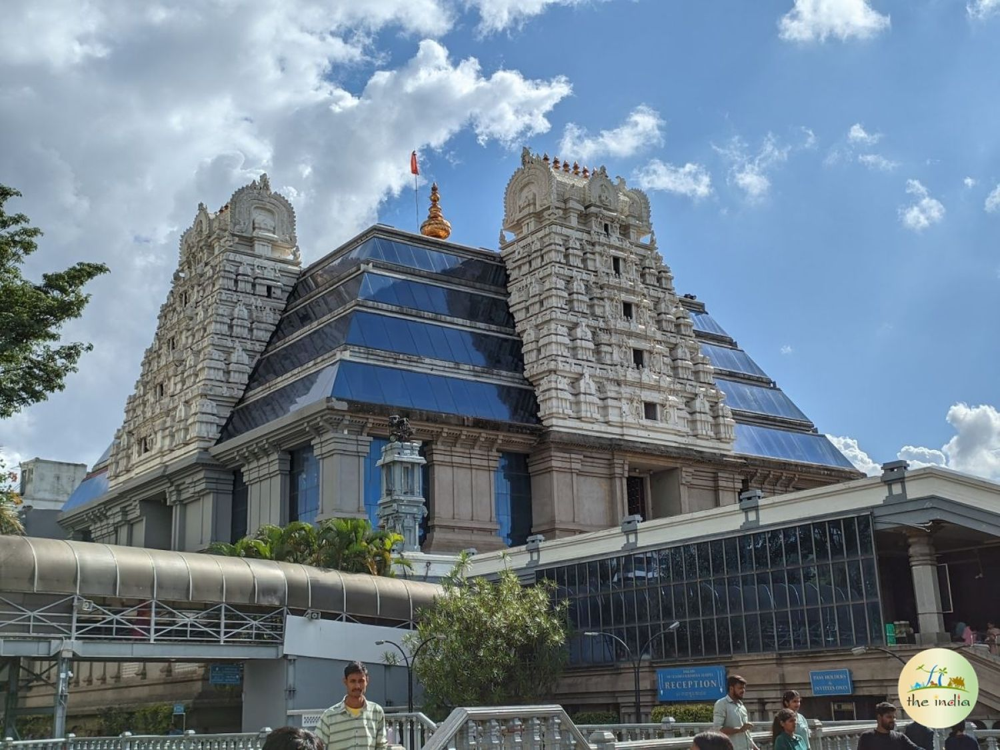

History of Bangalore
Bangalore, officially known as Bengaluru, is the capital city of Karnataka. Its roots date back to 1537 when Kempe Gowda, a Vijayanagara feudal lord, founded the city. He envisioned it as a town fortified with walls, watchtowers, and gates, setting the foundation for its growth.
During the 18th century, Hyder Ali and his son Tipu Sultan transformed Bangalore into a strategic center for administration and military operations. Tipu Sultan's resistance to British colonial expansion earned the city a place in India's freedom struggle.
In 1799, after Tipu Sultan's defeat, Bangalore came under British control and soon emerged as an administrative and military hub. The British also contributed significantly to its infrastructure, including the introduction of railways and public services.
Following India's independence in 1947, Bangalore evolved into a center of innovation, education, and technology. Today, it is celebrated as the "Silicon Valley of India," hosting numerous IT companies, startups, and research institutions.
Popular Tourist Attractions
-
Lalbagh Botanical Garden:
A historic garden originally developed by Hyder Ali and expanded by Tipu Sultan. Its iconic glasshouse hosts biannual flower shows, while the 240-acre garden features diverse flora from around the world.
 -
Bangalore Palace:
Built in the Tudor Revival style, this palace is a magnificent structure with wooden carvings, vintage furniture, and expansive grounds. It provides a glimpse into the royal lifestyle of the Wadiyar dynasty.
 -
Tipu Sultan's Summer Palace:
A fine example of Indo-Islamic architecture, this palace is constructed entirely of teakwood and features intricate carvings and beautiful frescoes. It was Tipu Sultan's summer retreat.
 -
Cubbon Park:
A lush green park in the heart of the city, spread over 300 acres. It is perfect for relaxing strolls and is home to several government buildings and statues, offering a blend of nature and history.

-
ISKCON Temple:
A spiritual haven perched atop a hill, this temple combines modern architecture with ancient designs. It offers stunning views of the city and a serene environment for devotees.

Conclusion
Bangalore is a city that seamlessly blends its rich historical heritage with modern advancements. From its foundation as a fortified town to its evolution into a global technology hub, Bangalore's journey is a testament to its resilience and innovation.
Its historical landmarks, lush gardens, and vibrant culture make it a must-visit destination for travelers. Whether you are exploring its ancient palaces or enjoying the vibrant energy of its IT corridors, Bangalore offers something unique for everyone.